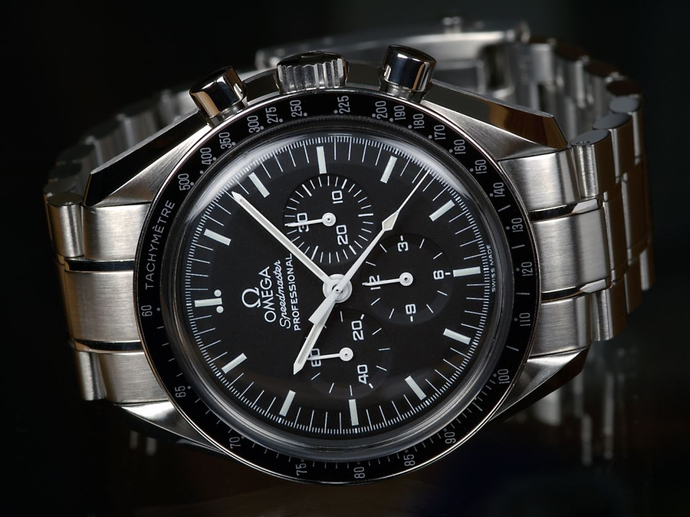
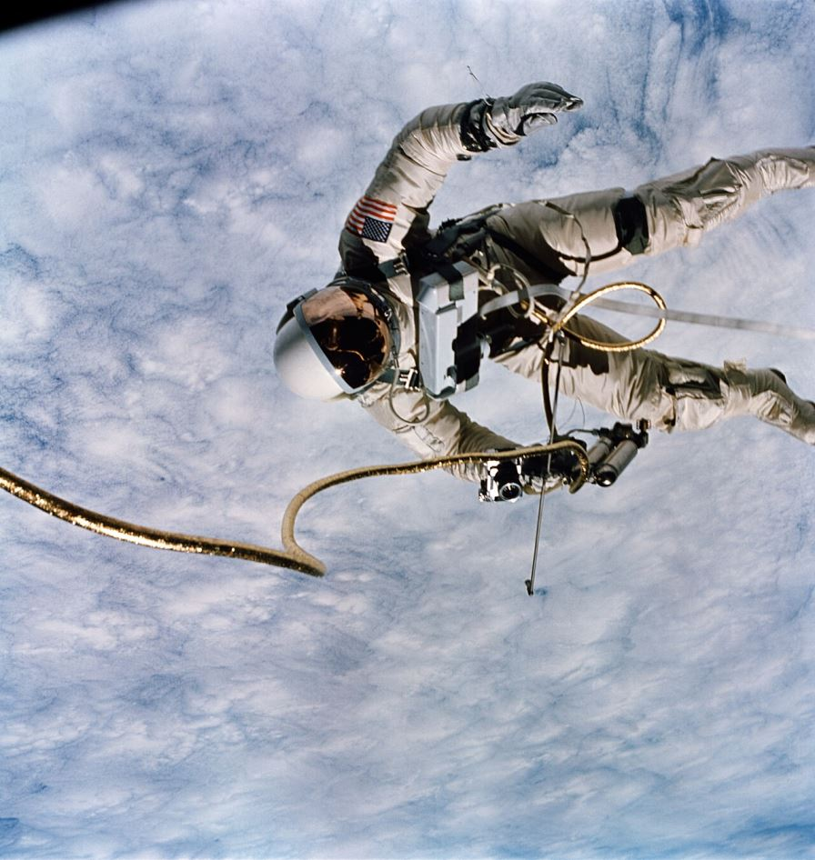
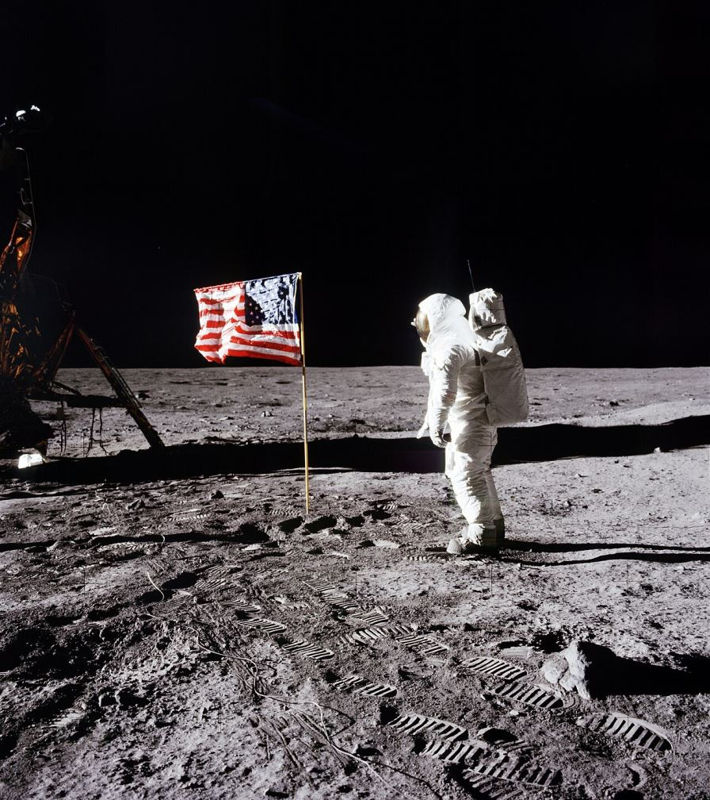
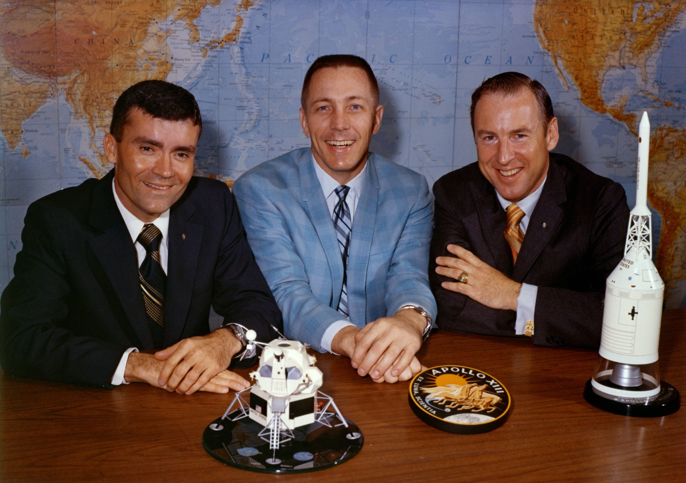
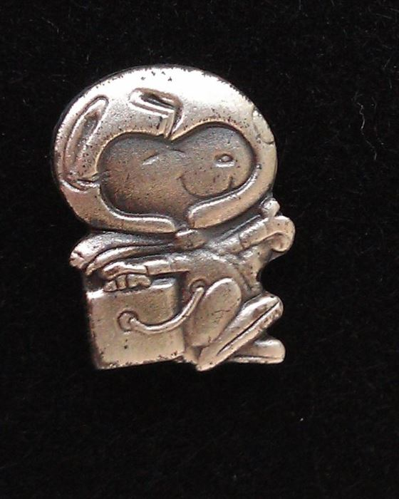

Before computers were reliable enough to trust, a crew's lives could depend on a mechanical chronograph strapped to a wrist. This is the story of how a watch became NASA equipment — how one model survived the most punishing procurement test in horological history, and how it ended up on the Moon.
Before NASA had a watch
In Mercury and early Gemini, NASA issued no watch at all. Astronauts flew with whatever was on their wrist — bought or gifted. John Glenn carried a Heuer stopwatch; Scott Carpenter wore a Breitling Navitimer; Gordon Cooper flew with a personal Speedmaster plus a Bulova Accutron, and timed his re-entry burn by wristwatch. Rolex GMT-Masters circulated as private gifts. But Wally Schirra was first with an Omega: on 3 October 1962, aboard Mercury-Atlas 8 Sigma 7 (6 orbits, 9 h 13 min), he wore his own Speedmaster CK2998 — the first Omega in space, and not yet NASA's choice.
Why a mechanical chronograph at all? Because the capsule's timers could fail — and a pilot needs a backup to time engine burns. In September 1964, Deke Slayton put the request on paper: a "highly durable and accurate chronograph to be used by Gemini and Apollo flight crews," for training and flight.
The tests that made the Moonwatch
In October 1964, NASA asked about ten watchmakers to submit chronographs. Roughly four responded. Hamilton's pocket chronograph was disqualified before testing; the three finalists were the Omega Speedmaster (ST 105.003, calibre 321), a Longines-Wittnauer 235T, and a Rolex chronograph 6238. Then the torture began — eleven tests, each designed to destroy a watch:
| # | Test | What the watch endured |
|---|---|---|
| 1 | High temperature | 48 h at 70 °C, then 30 min at 93 °C in partial vacuum |
| 2 | Low temperature | 4 h at −18 °C |
| 3 | Vacuum / thermal cycling | Repeated cycles between vacuum and temperature extremes |
| 4 | Humidity | Ten 24-hour cycles at over 95% humidity, 25–70 °C |
| 5 | Oxygen atmosphere | 48 h in pure oxygen at 70 °C |
| 6 | Shock | Six 40 G shocks in six directions |
| 7 | Acceleration | 7.25 G for ~5 min, then 16 G for 30 s |
| 8 | Low pressure | 10⁻⁶ atm |
| 9 | High pressure | 1.6 atm |
| 10 | Vibration | 5–2,000 Hz at 8.8 G |
| 11 | Acoustic noise | 130 dB, 40–10,000 Hz |
The results were brutal and unambiguous. The Rolex stopped twice during the humidity test and its seconds hand warped in the heat. The Longines-Wittnauer's crystal warped and detached. The Omega passed — not untouched (its luminous material deteriorated, it gained about 21 minutes during decompression and lost about 15 under acceleration), but running, accurate and intact. The astronauts then compared the survivors and chose the Speedmaster unanimously: accuracy, reliability, readability, ease of use.
On 1 March 1965, NASA declared the Speedmaster "Flight-Qualified by NASA for all Manned Space Missions." (Engineer James Ragan, who ran the program, later recalled formal acceptance as 1 June — but Gemini 3 flew on 23 March wearing the new issue, so March is the date that matters.)

The firsts
Schirra's personal CK2998-4 on Sigma 7 — worn, not issued.
Gemini 3: Grissom and Young fly the first NASA-issued Speedmasters (ST 105.003).
Ed White's Gemini 4 spacewalk — his 105.003 strapped over his left suit sleeve on a long Velcro band.

Apollo 11 — the first watch on the Moon
Armstrong and Aldrin both carried ST 105.012s with the calibre 321 movement. On the surface, though, there was only one watch between them: the Lunar Module's mission timer was malfunctioning, so Armstrong left his inside the lander as the backup timer, and Aldrin wore his on the Moon — the first watch worn on another world. (The often-repeated story that a specific light bulb had burned out isn't in the crew's technical debrief; what's documented is that the timer was acting up, and they wanted one guaranteed-working watch aboard.)
The two watches then took very different paths. Armstrong's went to the Smithsonian in 1973, where it remains. Aldrin's was lost in 1971 while being shipped to the Smithsonian — apparently stolen in transit, never recovered, and still legally US government property. A man claiming to have found it for $175 surfaced in 2003; NASA, the Smithsonian and Aldrin all rejected the watch as inauthentic.

Apollo 13 — fourteen seconds
Apollo 13's finest watch story happened in the dark. After the oxygen tank explosion, the Lunar Module became the lifeboat — powered down to save electricity, its guidance computer off. To get home, the crew needed a mid-course correction burn with no computer to time it. On the night of 15 April 1970 Houston time (16 April UTC), they fired the LM's descent engine manually: planned for 15 seconds, cut off by hand at 14.
"We used the watch that Jack had on his wrist... Jack timed the burn on the engine." — Commander Jim Lovell, on Jack Swigert's Speedmaster
Swigert, the command module pilot who had joined the crew three days before launch, timed the burn that brought them home. (Splashdown came on 17 April; a separate final correction that day lasted 23 seconds.) On 5 October 1970, astronaut Thomas Stafford presented Omega with the Silver Snoopy Award — the astronauts' own highest honour — for the watch's part in the rescue.


Apollo 15 — the other Moon watch
On 1 August 1971, during his second moonwalk, Dave Scott noticed his NASA-issued Speedmaster had lost its crystal. For the final EVA he strapped on his personal backup: a Bulova chronograph. It made history of its own — the only privately owned watch ever worn on the Moon, and the only American-made one. In October 2015 it sold at auction for $1,625,000, then a record for astronaut memorabilia.
Why had NASA's watch failed? Because of a deliberate choice: the Speedmaster's hesalite crystal is acrylic, not glass. NASA preferred it precisely because acrylic deforms and crazes rather than shattering — in zero gravity, glass splinters would float freely around the cabin and into eyes and equipment. A lost crystal was the acceptable price of safety.
The price of history
| Watch | Story | Auction result |
|---|---|---|
| Dave Scott's Bulova chronograph | Worn on the Moon, Apollo 15 EVA-3 | $1,625,000 — RR Auction, Oct 2015 |
| Ron Evans' Speedmaster (Apollo 17) | Flown experiment watch | $245,000 — Christie's, Dec 2015 (bought by the Omega Museum) |
| Ron Evans' Rolex GMT-Master | Flown to the Moon, carried not worn | $131,450 — Heritage, 2009 |
| Armstrong's 18K gold Speedmaster No. 17 | Commemorative gift, never flown | $2,125,000 — RR Auction, Apr 2025 |
Since the Shuttle — and today
The Speedmaster's NASA career didn't end with Apollo. In 1978, NASA re-tested and re-qualified it for the Space Shuttle, ordering 56 "Alaska III" examples first flown on STS-2 in November 1981. Then came the Omega X-33 (1998): a titanium, quartz, analog-plus-digital watch developed over five years with astronaut input, certified for the Shuttle and worn on Mir and the ISS.
Today there is no single "NASA watch" rule. Astronauts fly with personal choices: Don Pettit wears an X-33 on the ISS, Russian cosmonauts favour the mechanical Speedmaster, and Garmins and Casios appear alongside. Artemis crews have reportedly been issued X-33s. And the commercial era writes its own chapter: the 2024 Polaris Dawn crew all wore bespoke IWC chronographs — not Speedmasters.
One correction the watch world often skips: the Speedmaster is not "the only NASA flight-qualified chronograph" in any broad sense. The defensible claim is narrower and still extraordinary: it is the only watch NASA ever qualified for extravehicular activity — the only watch certified for walking in space and on the Moon.
The Moonwatch today
"Moonwatch" is now the product name of the Speedmaster Professional. In 2021 Omega replaced the long-serving calibre 1861 with the calibre 3861 — manual-wind, co-axial, Master Chronometer certified. For Apollo 11's 50th anniversary in 2019, Omega issued 6,969 steel examples and 1,014 in its own Moonshine gold alloy. Sixty years after the tests, the Moonwatch is still in production, still manual-wind, still hesalite — and still the closest thing there is to buying a piece of Apollo equipment.
The watch was backup for machines like the LM's guidance computer. Meet the machines: the Engineering Reference — and the flight the watch was made for: Apollo 11.